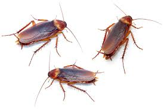

Cockroaches: The Unwanted Houseguests We Can’t Seem to Evict
Cockroaches—just hearing the word might be enough to make your skin crawl. These small, sneaky creatures have been around for millions of years, surviving everything from the extinction of dinosaurs to the invention of bug spray. They’ve adapted to nearly every environment on Earth, except for the freezing cold of Antarctica (lucky penguins). But let’s be honest: no one is exactly thrilled when a cockroach decides to set up shop in their home.
In this article, we’ll explore the world of cockroaches—why they’re so persistent, how to identify them, ways to keep them out, and what to do when you’re already sharing your living space with these relentless critters. Don’t worry, we’ll keep things simple and straightforward. And yes, we’ll try to sneak in a laugh or two along the way (you know, to help take the edge off).
What Exactly Are Cockroaches?
At their core, cockroaches are insects that belong to the order Blattodea. With over 4,500 species identified, it’s safe to say that cockroaches are incredibly diverse. Thankfully, only about 30 species are considered pests—though if you’ve ever had a run-in with one, it feels like all 4,500 have personally invaded your home.
Cockroaches are typically characterized by their flat, oval-shaped bodies, long antennae, and six legs. Their color can range from light brown to almost black, depending on the species. The most common household offenders are the American cockroach, German cockroach, and Oriental cockroach. Despite their different names, they all share a common love for damp, dark spaces (and your leftover pizza crusts, apparently).
Cockroach Survival Skills: The Ultimate Adaptation Story
Cockroaches are the true survivalists of the insect world. They’ve been around for over 300 million years—longer than humans by a long shot. While they may not be able to survive a nuclear blast (contrary to popular belief), they do have some pretty impressive survival skills. For one, cockroaches can go without food for up to a month, but they can only last about a week without water. Guess this explains why they love hanging out near your kitchen sink or bathroom drains.
Another impressive feat? Cockroaches can hold their breath for up to 40 minutes. So, drowning them is more difficult than it sounds (sorry for the mental image). They can also survive decapitation—yes, really. A cockroach can live for up to a week without its head because their circulatory system is quite different from ours, and they don’t rely on their brain to breathe. They eventually die because they can’t drink water. What a way to go, right?
Why Cockroaches Love Your Home (And How to Make Them Hate It)
Cockroaches aren’t picky when it comes to choosing a place to live. Any place with a little food, water, and shelter will do just fine. Unfortunately, our homes tend to provide all three in abundance, even if we try to keep things clean. Cockroaches particularly enjoy warm, damp environments, so they’re often found in kitchens, bathrooms, and basements. Got a leaky pipe under your sink? That’s basically a cockroach Airbnb.
If you want to keep cockroaches out, the best defense is a good offense:
- Seal entry points: Cockroaches can squeeze through even the tiniest cracks and crevices. Seal any gaps around doors, windows, and pipes.
- Keep it dry: Since cockroaches need water to survive, make sure to fix any leaks and avoid leaving standing water around. Even a small puddle under the fridge could become their favorite spa.
- Store food properly: Cockroaches are scavengers and will eat just about anything, from crumbs to cardboard. Keep food sealed in airtight containers and clean up spills and crumbs right away. Don’t forget to take out the trash regularly, too.
- Clean, clean, clean: Regular cleaning will help eliminate the potential food sources that cockroaches are looking for. This includes vacuuming, wiping down counters, and keeping dishes washed.
- Declutter: Cockroaches love clutter, as it provides plenty of hiding places. Reduce their hiding spots by decluttering and keeping your home organized.
If you follow these steps, you’ll be making your home less inviting for cockroaches. They’ll hopefully move on to find another spot—preferably far away from your house!
The Big Question: Are Cockroaches Dangerous?
While cockroaches are undeniably gross, they aren’t dangerous in the way that some insects are. They don’t bite or sting, and they aren’t venomous. However, they can still pose some health risks. Cockroaches are known to carry bacteria such as Salmonella and E. coli, which they can spread to your food and surfaces. If you notice them crawling around your kitchen, it’s time to sanitize everything—stat.
Cockroach droppings and shed skins can also trigger allergies and asthma in some people, particularly children. Their presence in a home has been linked to increased asthma symptoms, especially in urban areas where infestations are more common.
So while cockroaches might seem invincible, we’ve got something they don’t—the internet. So, next time you spot one scurrying across the floor, just remember: you've got the upper hand... even if it doesn't always feel that way.
What are Bed Bugs?
Bed bugs are persistent little creatures that can cause a lot of discomfort. But with diligence, patience, and a bit of elbow grease (or professional help), you can evict these bloodsuckers from your home. Remember, bed bugs aren’t a reflection of your cleanliness—they’re just really, really annoying. So, don’t lose sleep over them (literally). Take action, stay vigilant, and soon you’ll be back to enjoying a peaceful, bite-free slumber.
How to Get Rid of Cockroaches Once They’ve Moved In
Okay, so what happens if cockroaches have already made themselves comfortable in your home? Here are a few ways to show them the door (or, you know, the trash can):
- Traps and baits: Cockroach traps and baits are available at most hardware stores. These products use attractants to lure cockroaches, which then either kill them on the spot or carry poison back to their nests, wiping out the whole colony.
- Insecticidal sprays: Cockroach sprays can be effective, but they’re often only a temporary solution. You’ll need to spray directly on the roaches, and it won’t stop new ones from entering your home.
- Professional exterminators: If the problem is really out of hand, calling in a professional pest control service is your best bet. They have access to stronger pesticides and can help identify the source of the infestation.
One word of caution: Cockroaches are resilient little creatures. Even if you manage to kill a bunch of them, there may still be eggs lying around waiting to hatch. That’s why persistence is key. Continue cleaning, sealing cracks, and setting traps until you’re sure they’re gone for good. Or at least until they’ve found another unlucky homeowner to annoy.